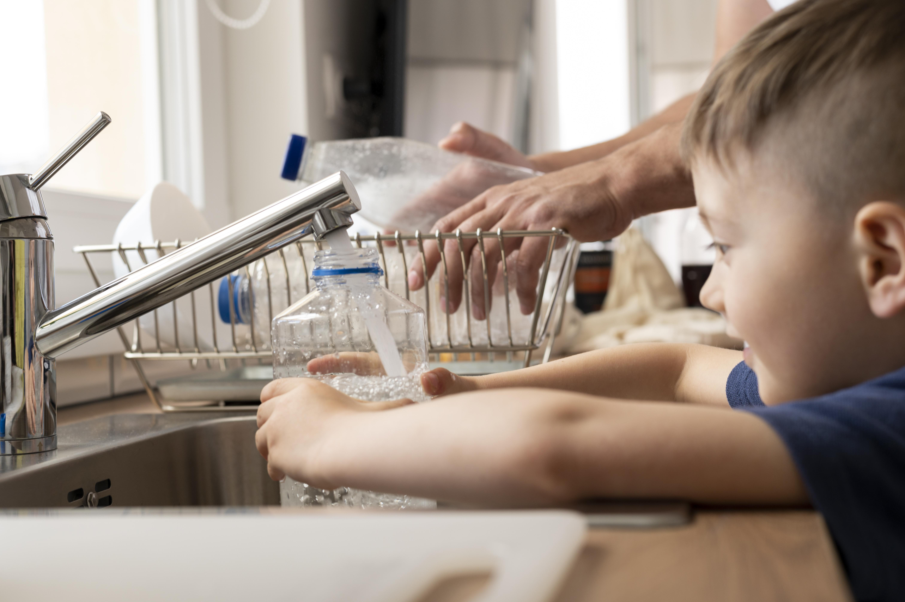

Estrés hídrico en México
8 de las 13 regiones hídricas del país padecen estrés hídrico y de los 653 acuíferos nacionales 157 están sobreexplotados.

10 millones de personas
en el país no tienen acceso a agua diariamente y las zonas más afectadas son las periferias urbanas, marginales y el campo